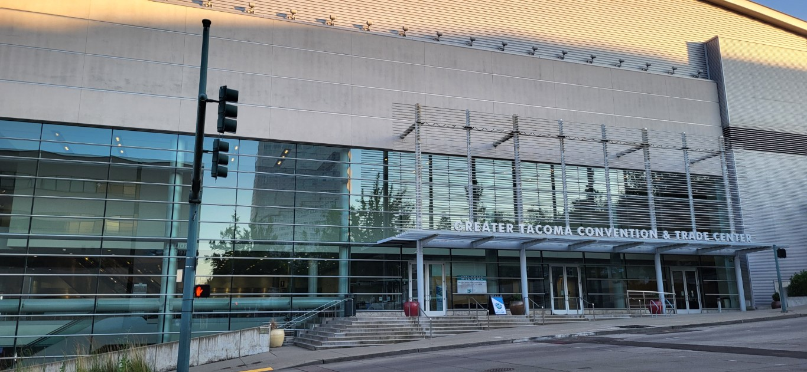
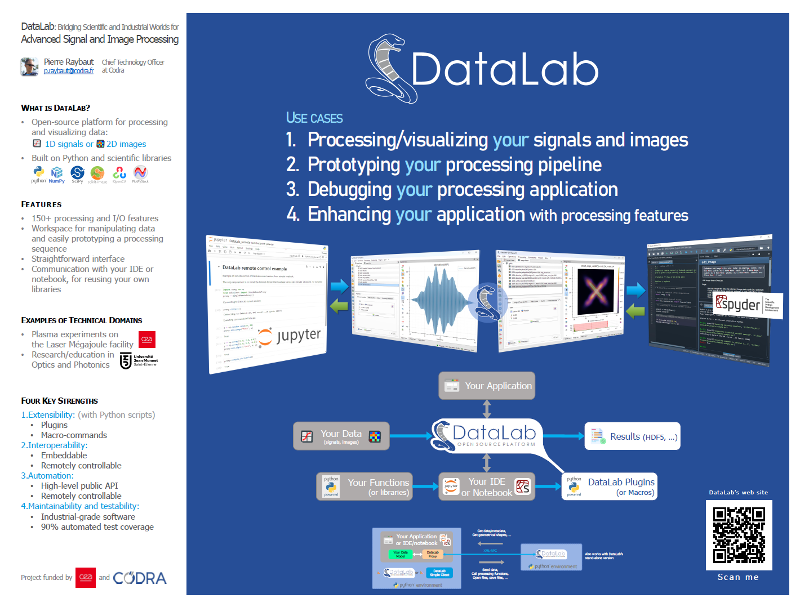

SciPy 2024 - Tacoma, Washington#
{kind=link}

Centre de congrès de Greater Tacoma, où s’est tenue la conférence SciPy 2024#
Aperçu de la conférence#
En juillet 2024, DataLab a fait ses débuts internationaux à SciPy 2024, la plus grande conférence au monde dédiée à l’écosystème Python scientifique. Organisée à Tacoma, Washington (près de Seattle), la conférence a rassemblé environ 800 participants issus de l’industrie, du milieu universitaire et du gouvernement.
SciPy est organisé par la fondation NumFOCUS et se tient chaque année depuis plus de 20 ans, réunissant des personnes de divers domaines partageant un intérêt commun pour Python et le calcul scientifique.
Présentation de DataLab#

Présentation de DataLab à SciPy 2024#
Titre de la présentation : De Spyder à DataLab : 15 ans de création de logiciels scientifiques en Python
Intervenant : Pierre Raybaut (Directeur Général Ingénierie, CODRA)
La présentation a introduit DataLab dans le cadre d’un récit plus large sur 15 ans de développement de logiciels scientifiques en Python, incluant la création de Spyder (l’IDE Python scientifique) et d’autres projets comme Python(x,y) et WinPython.
Points Clés Présentés#
- Position Unique de DataLab :
Une plateforme qui comble le fossé entre les logiciels de traitement scientifique personnalisables et les applications de niveau industriel.
- Trois Modes de Fonctionnement :
Application autonome pour l’analyse de données
Bibliothèque Python pour l’intégration dans des scripts et des notebooks
Plateforme contrôlée à distance pour l’automatisation
- Intégration avec l’Écosystème Scientifique :
DataLab s’intègre parfaitement avec les IDE (en particulier Spyder) et les notebooks Jupyter, nécessitant seulement deux lignes de code pour se connecter.
- Approche de Validation :
Validation fonctionnelle : plus de 200 tests automatisés
Validation scientifique : garantir que les utilisateurs peuvent faire confiance aux résultats
Tests multi-plateformes : Windows, Linux et macOS
- Adoption Industrielle :
DataLab est utilisé dans des environnements de production et dispose d’un package Debian.
Regarder la Présentation Complète#
Ressources#
{kind=link}

Poster DataLab présenté à SciPy 2024#
Impact sur le Développement de DataLab#
Les retours et discussions lors de SciPy 2024 ont influencé plusieurs aspects du développement de DataLab :
Accent accru sur la documentation et les tutoriels pour les nouveaux utilisateurs
Priorité accrue à la stabilité de l’API pour l’utilisation de la bibliothèque
Validation que l’approche en trois modes (autonome/bibliothèque/à distance) résonne avec les utilisateurs
Confirmation de l’importance de maintenir à la fois la flexibilité scientifique et la robustesse industrielle
Perspectives sur d’éventuelles collaborations avec l’équipe de l’IDE Spyder pour une intégration plus approfondie
La conférence a confirmé que DataLab répond à un besoin réel dans l’écosystème Python scientifique en tant que pont entre le prototypage rapide et le traitement des données prêt pour la production, même s’il s’agit d’un public de niche.